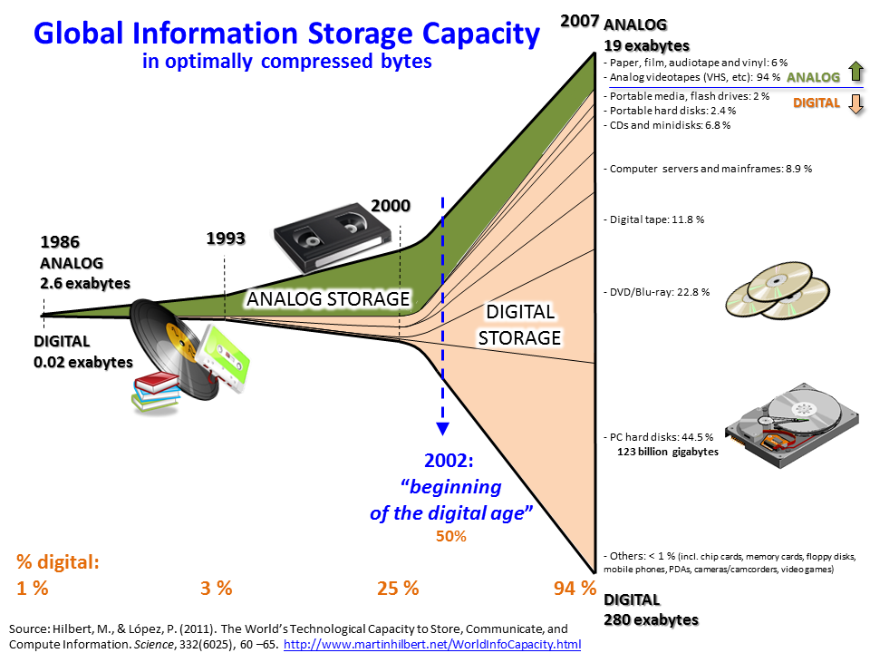

<div class="wrapper">
  <div class="content">
    <p>
      Big data primarily refers to data sets that are too large or complex to be
      dealt with by traditional data-processing application software. Data with
      many entries (rows) offer greater statistical power, while data with
      higher complexity (more attributes or columns) may lead to a higher false
      discovery rate. Though used sometimes loosely partly because of a lack of
      formal definition, the interpretation that seems to best describe big data
      is the one associated with large body of information that we could not
      comprehend when used only in smaller amounts. Big data analysis challenges
      include capturing data, data storage, data analysis, search, sharing,
      transfer, visualization, querying, updating, information privacy, and data
      source. Big data was originally associated with three key concepts:
      volume, variety, and velocity. The analysis of big data presents
      challenges in sampling, and thus previously allowing for only observations
      and sampling. Thus a fourth concept, veracity, refers to the quality or
      insightfulness of the data. Without sufficient investment in expertise for
      big data veracity, then the volume and variety of data can produce costs
      and risks that exceed an organization's capacity to create and capture
      value from big data. Current usage of the term big data tends to refer to
      the use of predictive analytics, user behavior analytics, or certain other
      advanced data analytics methods that extract value from big data, and
      seldom to a particular size of data set. "There is little doubt that the
      quantities of data now available are indeed large, but that's not the most
      relevant characteristic of this new data ecosystem." Analysis of data sets
      can find new correlations to "spot business trends, prevent diseases,
      combat crime and so on". Scientists, business executives, medical
      practitioners, advertising and governments alike regularly meet
      difficulties with large data-sets in areas including Internet searches,
      fintech, healthcare analytics, geographic information systems, urban
      informatics, and business informatics. Scientists encounter limitations in
      e-Science work, including meteorology, genomics, connectomics, complex
      physics simulations, biology, and environmental research. The size and
      number of available data sets have grown rapidly as data is collected by
      devices such as mobile devices, cheap and numerous information-sensing
      Internet of things devices, aerial (remote sensing), software logs,
      cameras, microphones, radio-frequency identification (RFID) readers and
      wireless sensor networks. The world's technological per-capita capacity to
      store information has roughly doubled every 40 months since the 1980s; as
      of 2012, every day 2.5 exabytes (2.5x260 bytes) of data are generated.
      Based on an IDC report prediction, the global data volume was predicted to
      grow exponentially from 4.4 zettabytes to 44 zettabytes between 2013 and
      2020. By 2025, IDC predicts there will be 163 zettabytes of data.
      According to IDC, global spending on big data and business analytics (BDA)
      solutions is estimated to reach $215.7 billion in 2021. While Statista
      report, the global big data market is forecasted to grow to $103 billion
      by 2027. In 2011 McKinsey & Company reported, if US healthcare were to use
      big data creatively and effectively to drive efficiency and quality, the
      sector could create more than $300 billion in value every year. In the
      developed economies of Europe, government administrators could save more
      than €100 billion ($149 billion) in operational efficiency improvements
      alone by using big data. And users of services enabled by
      personal-location data could capture $600 billion in consumer surplus. One
      question for large enterprises is determining who should own big-data
      initiatives that affect the entire organization. Relational database
      management systems and desktop statistical software packages used to
      visualize data often have difficulty processing and analyzing big data.
      The processing and analysis of big data may require "massively parallel
      software running on tens, hundreds, or even thousands of servers". What
      qualifies as "big data" varies depending on the capabilities of those
      analyzing it and their tools. Furthermore, expanding capabilities make big
      data a moving target. "For some organizations, facing hundreds of
      gigabytes of data for the first time may trigger a need to reconsider data
      management options. For others, it may take tens or hundreds of terabytes
      before data size becomes a significant consideration."
    </p>
    
    <p>
      Accurate customer retention strategies can be created by building a
      customer sample from big data and apply analytic algorithms to forecast
      at-risk customers, being able to interact in real time with them. We can
      set six different dynamics to retrieve business value in big data and
      increase sales:
    </p>
    <p>
      1. Personalized service and customized offers Consumers may use multiple
      channels from a retailer, so firms gather big data from several sources.
      By using real-time analytics, they can design personalized services and
      specific promotions to loyal customers and new ones.
    </p>
    <p>
      2. Dynamic pricing to attract new customers Pricing is critical in a
      highly competitive market. Dynamic pricing system used by Amazon.com,
      monitors prices from the competition and send alerts every 15 seconds,
      resulting in a 35% sales increasement. They process big data like
      competitors` prices, product sales, customers actions and geographical
      preferences.
    </p>
    <p>
      3. Customer service and proactive maintenance BDA can increase CRM value,
      when e-commerce firms use contact forms and chatting in their online
      stores. By using data collected by sensors in their products, firms can
      also offer proactive maintenance.
    </p>
    <p>
      4. Supply chain management The supply chain process involves several third
      parties, so big data analytics by obtaining information from various
      parties, can be helpful in this process. When customers places orders on
      an online platform, they expect to be able to check their exact
      availability, current status and location.
    </p>
    <p>
      5. Fraud detection and security issues In order to identify fraud in real
      time, it`s necessary to analyze data at an aggregated level. Softwares
      like Hadoop do this through the combination of customer`s transaction data
      with their purchase history, web logs, social feed and smartphone
      geospatial location data.
    </p>
    <p>
      6. Predictive analytics When used together, big data and decision science
      tools enable firms to predict individual customer`s potential value and
      future sales patterns, helping to better forecast inventory requirements.
    </p>
    <p>
      In conclusion, we can say that Big Data analysis is increasingly valuable
      to e-commerce firms, by transforming data into business insights and
      contributing to solid decision making to maximize the commercial value of
      your business. This can only be done with the correct application of human
      resources, processes, and sophisticated technologies.
    </p>
  </div>
</div>
